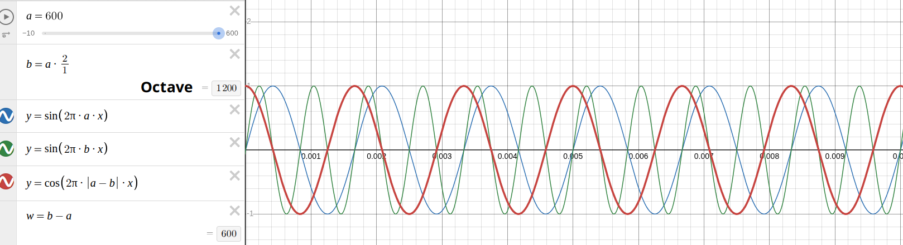
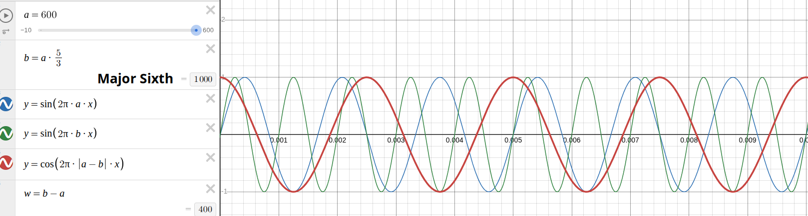
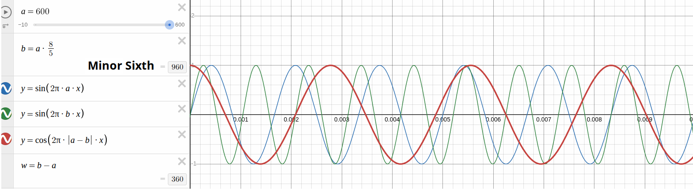
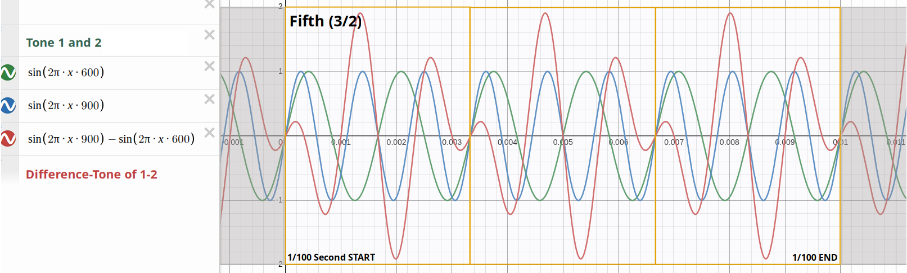
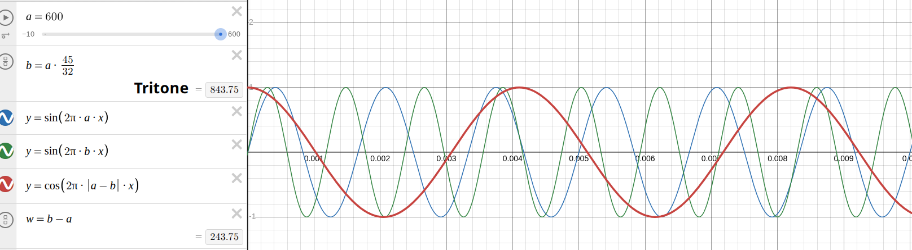
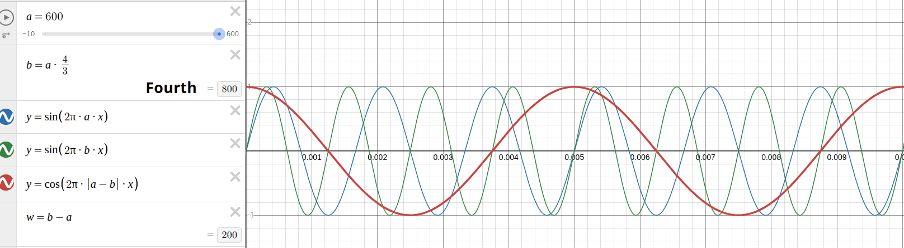
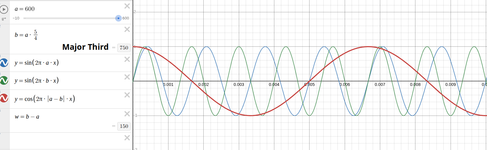
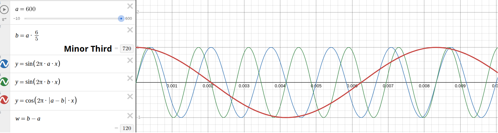

Waves are changes in air pressure, and are responsible for us hearing a certain pitch. Sine waves produce very distinctive and pure tones, similar to flutes. A sine wave starts at zero, rises to its peak value, then falls below zero and rises again to zero. A cosine wave starts at its peak value, falls below zero, then crosses zero upwards and rises again to its peak. The unit Hertz means one complete wave in one second, so 100 Hertz would be 100 waves in one second, or one wave in 1/100 second.
All diagrams below show waves in a time-frame of 1/100 second. The frequencies of the two interval-tones are given in variables a and b, whereby b was derived from a by multiplying it with the fraction of a pure interval. The deeper interval-tone (a) is green, the higher one (b) blue. The shape of their resulting difference-tone is red.
For instance, when you look at the octave, you see 6 green waves (a = 600 Hertz, near D5)
and 12 blue waves (b = 600 * 2/1 = 1200 Hertz).
Their resulting red difference-tone has 6 waves in the 1/100 time-frame,
because the difference of 1200 - 600 = 600 Hertz.
The major sixth goes with 1000 - 600 = 400 Hertz,
thus it has 4 waves in the 1/100 time-frame.
The difference frequency (b - a) is calculated on bottom left of the diagram,
dividing it by 100 gives the number of expected waves.
Remember: the closer the interval-tones are to each other, the deeper their difference tone, the flatter its curve!







